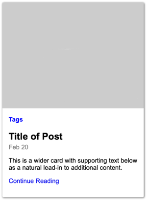
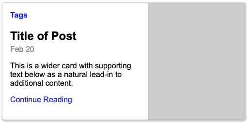

CSS Components - Design a simple component
Preparation #
Make sure you read through the Prepare section for this topic. You will also need your editor open with some html and the code from the Prepare activity:
-
Review BEM
One issue we run into very early on with components is that CSS has global scope. What this means is that all CSS is visible EVERYWHERE! For something like a component that is designed to be reusable this can cause problems. You might include the component into the HTML and CSS and find out that you had the same class names in the component that you had in the existing CSS and something breaks.
CSS naming conventions are designed to help with the global nature of CSS. One popular convention is called BEM - Block, Element, Modifier. Take a few minutes to familiarize yourself with BEM's basic conventions.
-
Review the Layout
Below is a screenshot of the component we would like to build. It is a simple article summary that you might find on a typical blog. Review it considering how the HTML should be structured, and how you might layout and name the different blocks and elements.
 Small/mobile
 Large
-
Identify blocks and elements
Our component is made up of the following elements:
- An image
- A list of tags
- Title
- Date
- A short lead in to the article.
- A link to continue to the article.
As we write our HTML we should keep semantics in mind as we choose our HTML tags, as well as the tenets of BEM as we determine classes
-
Write the HTML
Create a new file in your editor, or Codepen and attempt to write the HTML complete with appropriate classes. Then return and check out the instructor's solution below.
One Solution
<article class="summary">
<img
class="summary__img"
src="http://via.placeholder.com/320x240"
alt="post image"
/>
<section class="summary__body">
<p class="summary__tags">Tags</p>
<h2 class="summary__title">Title of Post</h2>
<p class="summary__date">Feb 20</p>
<p class="summary__para">
This is a wider card with supporting text below as a natural lead-in
to additional content.
</p>
<p class="summary__link"><a href="#">Continue Reading</a></p>
</section>
</article>Once you have reviewed the solution above, hopefully you noticed a few things:
-
First, this is not the only way to code this up. You may have differences in your code, and that is ok. You may have decided that a section would be a better wrapper than an article for example, and you may be right ;)
-
Second notice that almost everything has a class on it. We start with our block class summary at the top, and then we name the elements. You might be saying to yourself "why don't I just use complex selectors and get rid of half of those classes?" If we are using a naming convention like BEM (and for this activity we should be), it specifies that we should not use element selectors in our CSS. The only way to avoid that is to use lots of classes.
This is one of the biggest complaints most folks have with BEM...but it turns out that as projects become larger and more complex consistently adopting a naming convention like this makes the code much much easier to maintain over time.
-
One word in favor of having classes on everything. It makes it really easy to differentiate between all of those paragraph elements, and it makes it clear in the HTML what content is contained in each element. They also provide nice hooks if we were using this as a template for a bunch of articles coming from a database. Getting the right information into each element becomes easy...and things won't break if a someone decides to re-order and re-style things without talking to anyone!
-
This markup will also lend itself well to both our small and large screen views. For the small screen view in fact we will need very little positioning.
-
-
Style
Add the CSS (SCSS if you have completed that module) to style the mobile view first. Then add whatever media queries you need to make the design responsive. Pay attention to padding, margins, font-sizes, placement, etc. You can just use helvetica, arial, san-serif for the font.
Example with SCSS
If you are using SCSS you have a great tool to help you manage your BEM naming: nesting. Here is an example of how that might work:
.summary {
box-shadow: 1px 1px 4px 1px #888;
border-radius: 3px;
max-width: 360px;
&__title {
margin-bottom: 0;
}
&__img {
width: 100%;
}
&__body {
padding: 1em;
}
&__tags {
color: blue;
font-weight: bold;
margin: 0;
}
&__date {
color: grey;
margin-top: 0.3em;
}
&__link a {
text-decoration: none;
}
}As you can see, the CSS to create the mobile layout is quite simple, and it really won't take us too many more lines to complete it.
@media screen and (min-width: 440px) {
.summary {
display: flex;
max-width: 500px;
}
.summary__img {
width: 40%;
order: 2;
}
} -
Next Steps
At this point we would be prepared to use our component in a single or multiple layouts. We would simply copy/paste the template and fill in with real content. The arrangement of the components is up to the layout they are placed in. The component is only concerned with what happens inside of it...not out.